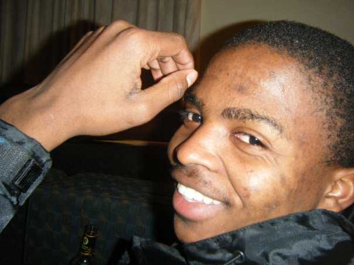

I am Sibusiso Nondoda, I grew up in Port St Johns. I have studied a BSc undergraduate degree
in computer science in an attempt to become a buisness analyst or systems analyst. Therefore, my
undergraduate studies focused on computer, economics and mathematical statistics. However, after being
accepted at the cortex hub, I felt more drawn to being an Entrepreneur, and therefore I'm looking
forward to create the next big thing .
I am Mandilakhe Hlaula, I grew up in King William's Town. I went to St. Christophers Private School and
graduated at Walter Sisulu University in 2014. My interest in technology started in High school, while I was
in grade 9, in 2006. I enrolled for Computer Application Technology for 3 years and later enrolled for Communication
Networks for 4 four years. I now see myself at The Cortex Hub employeed as an entrepreneur in the ICT industryand
yet to achieve greater developments.